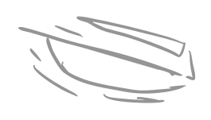
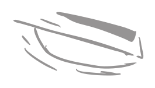
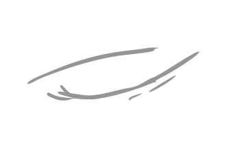
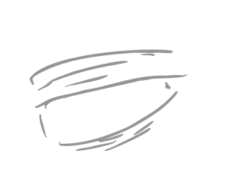
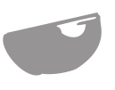
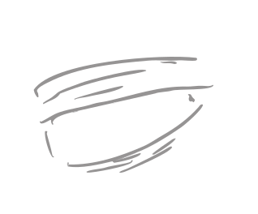
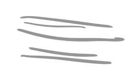
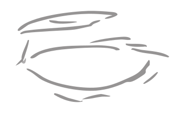
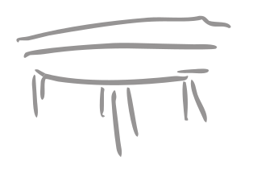
никогда не будь уверен
в собственной безопасности
во время путешествия
попробуй сохранить безопасность
в путешествии в одиночку
и не остаться без денег
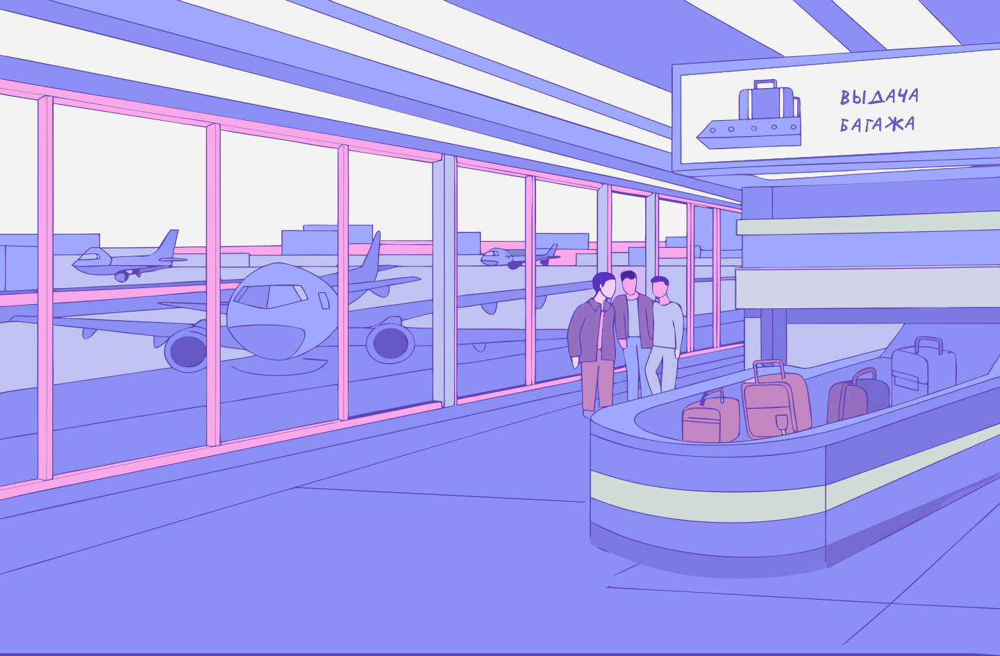
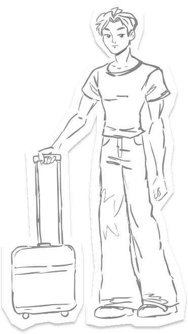
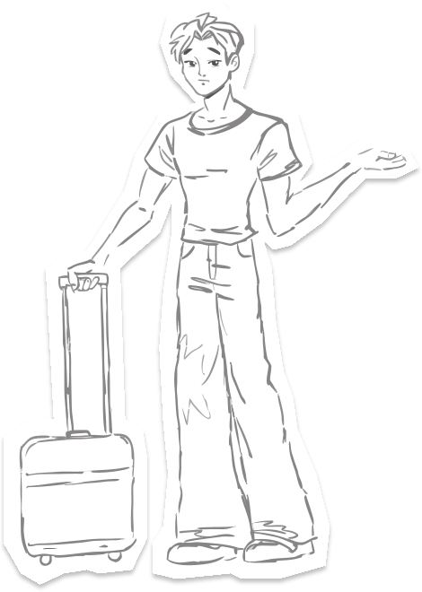
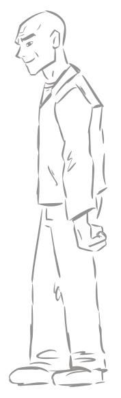
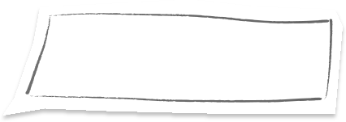
наконец-то я в путешествии! Пора вызывать такси, но кажется, ждать придётся целый час…
хэй, я могу подвезти тебя прямо сейчас до отеля, еще и дешево.
что думаешь? через час будешь в отеле лежать и вкусно есть.
х-ммм, дай мне подумать
что ты выберешь?
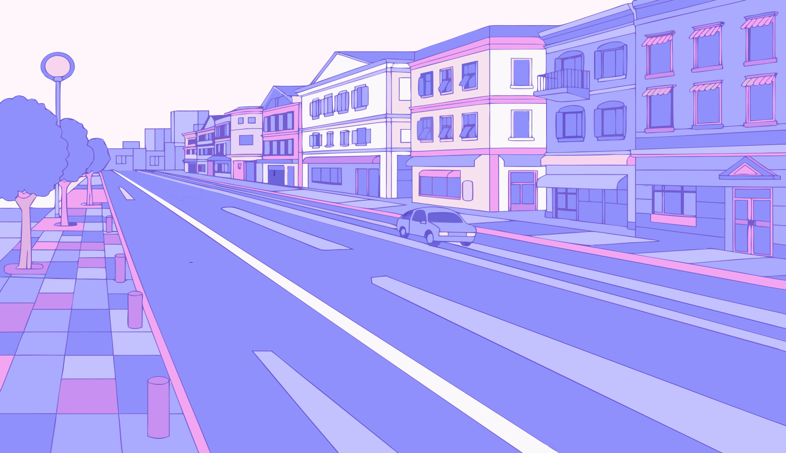
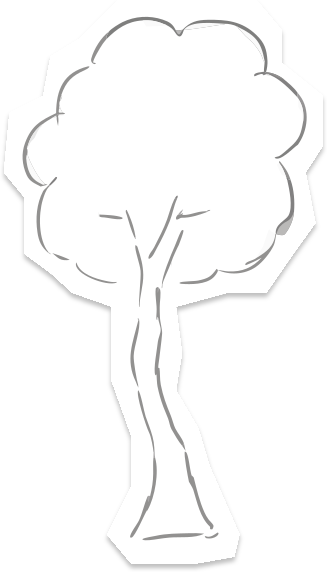
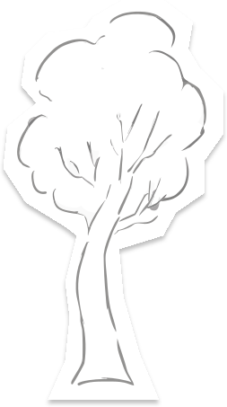
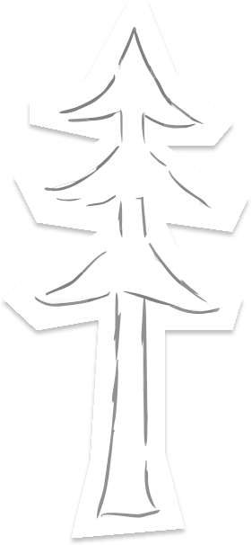
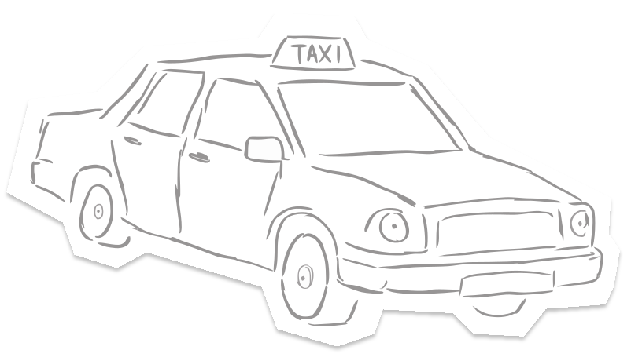
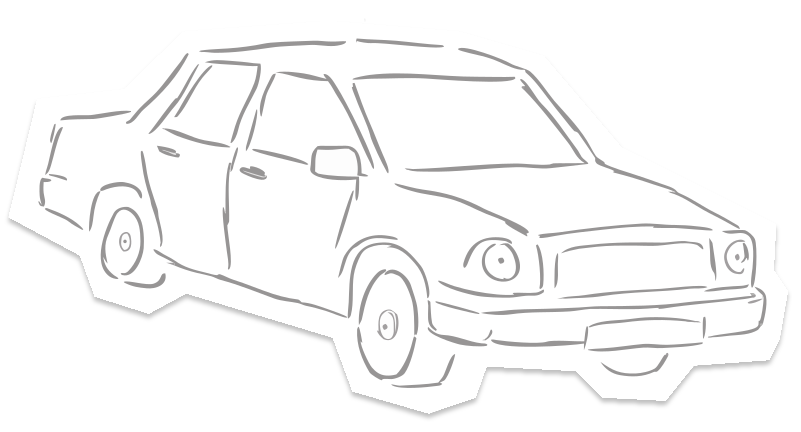
Водитель всю дорогу разговаривал по телефону,
не включил ТАКСОМЕТР
и назвал цену «для иностранцев»
Водитель чуть не попал в аварию,
так как не соблюдал правила дорожного движения,
но тебе повезло, он не стал поднимать цену


глава 1 (прибытие)
такси в чужом городе
В поездках нас проще обмануть, и таксисты этим часто пользуются. Водитель знает город и цены, а турист нет, поэтому то счётчик вдруг сломан и цена названа с потолка, то машина едет в объезд, то появляются доплаты за багаж, то в конце поездки сумма неожиданно растёт.
Но проблема не только в деньгах.
Случайный таксист может гнать, резко перестраиваться, быть уставшим после смены или ездить на старой неисправной машине. Так что можно и переплатить, и попасть в аварию.

Лучше заранее
- узнать примерные цены
- вызывать такси через приложение
- следить за маршрутом по карте
- пристёгиваться
- запоминать номер машины
А если водитель едет страшно, можно попросить ехать спокойнее или просто выйти в людном месте.


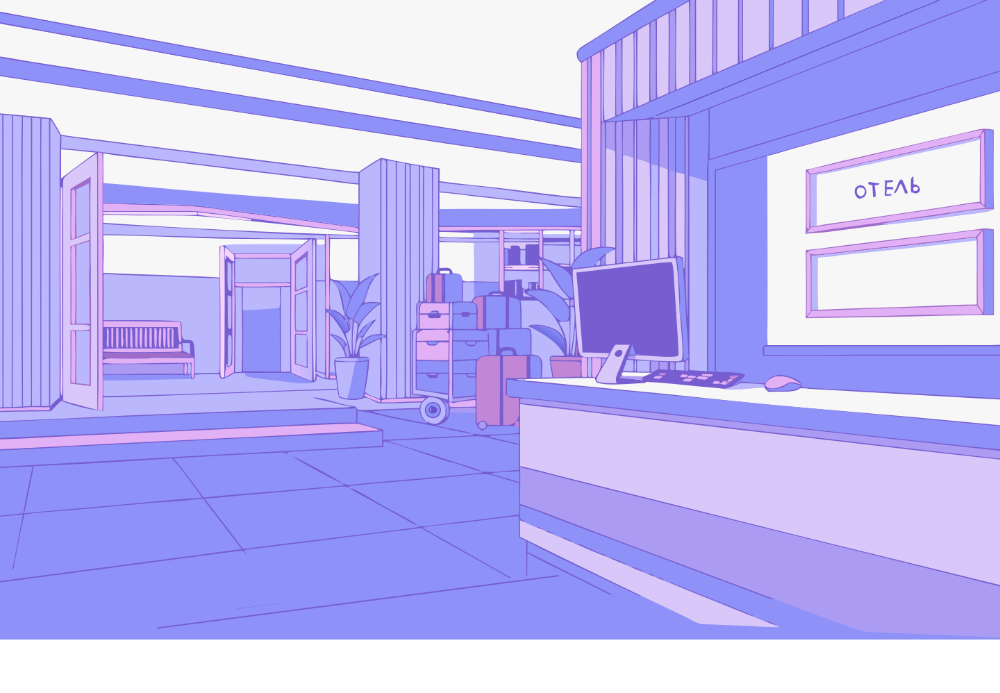

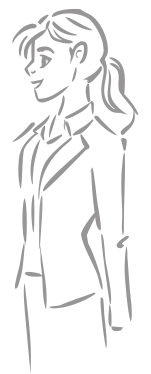

добрый вечер! рады приветствовать вас в нашем отеле, с вас 50$.
на ужин рекомендую вам либо заказать доставку, либо пойти в наше кафе.
ну наконец-то я в отеле, водители тут конечно…
так, а как мне заселиться? хочется скорее на ужин.
что ты выберешь?
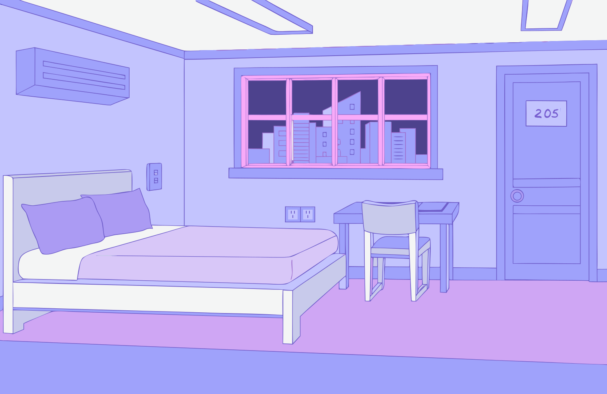

сегодня буду пиццу и колу, доставка приедет через 20 минут.
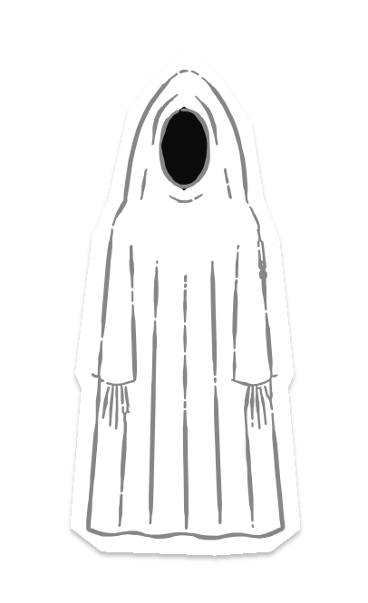

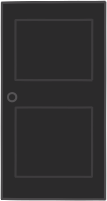
ой! что случилось? надо найти выключатель и нажать на него.
ваш ужин, сэр! с вас 20$
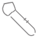
Ужин обошёлся в 20$,
а незнакомца ты сам впустил в номер,
и потерял 33% безопасности

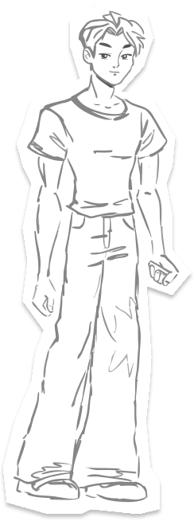
ой, тут в меню только пицца, ну ладно, закажу маргариту
ваша маргарита за 30$, сэр
спасибо!
ой, сегодня что-то с электричеством, приходите завтра!
куда делся свет? А-а-а-а!! у меня воруют деньги!
срочно найди преступника!
Пока в кафе не было света,
тебя обокрали, ты потерял 150$
и 25% безопасности
Лучше заранее
- просить оставить заказ на ресепшене
- не открывать, пока не понял, кто за дверью
- не оставлять телефон и кошелёк на столе
- смотреть цены в меню до заказа
- проверять отзывы о месте
Если с заказом или счётом что-то не так, лучше сразу позвать администратора.


глава 2 (ужин)
ужин в чужом городе
Доставка в номер кажется самым спокойным вариантом, но курьер всё равно чужой человек. Если открыть ему дверь и пустить внутрь, он увидит, что ты живёшь один и что у тебя с собой.
Еду лучше забирать у двери или на ресепшене.
В кафе свои риски. В толпе легко не заметить, как кто-то тянется к сумке или к телефону на столе, а в туристических местах цены иногда называют на глаз.

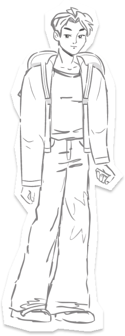
какой ужасный день!
надеюсь, что поход по магазинам
успокоит меня
карты пишут, что быстрее будет пойти по тому тёмному переулку, но мне страшно

эй, боишься идти туда? не переживай, я хожу по этому переулку уже 20 лет
что ты выберешь?
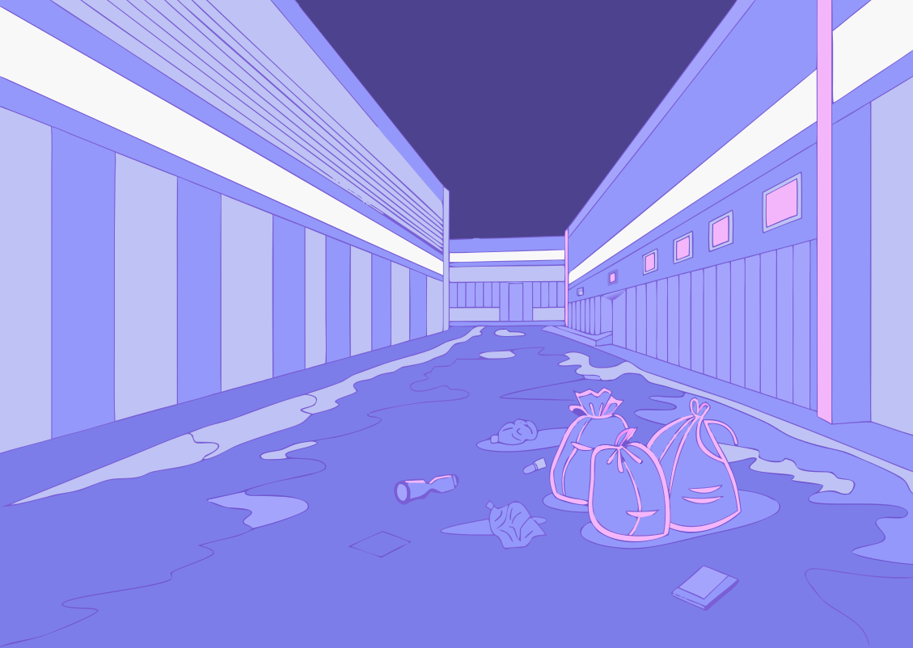
так, по карте сначала налево
теперь направо
дальше налево
и последний поворот направо. что-то тут совсем темно…
бежать назад вот так:
налево → направо → налево → направо

сердце колотится… сзади шаги, на меня нападают! надо бежать назад!
Ты убежал, но в панике выронил кошелёк.
Пара сэкономленных минут
не стоила такого риска
беги назад тем же путём!
жми по очереди те повороты, которые он запомнил для обратного пути. «назад» не жми, а то схватят!
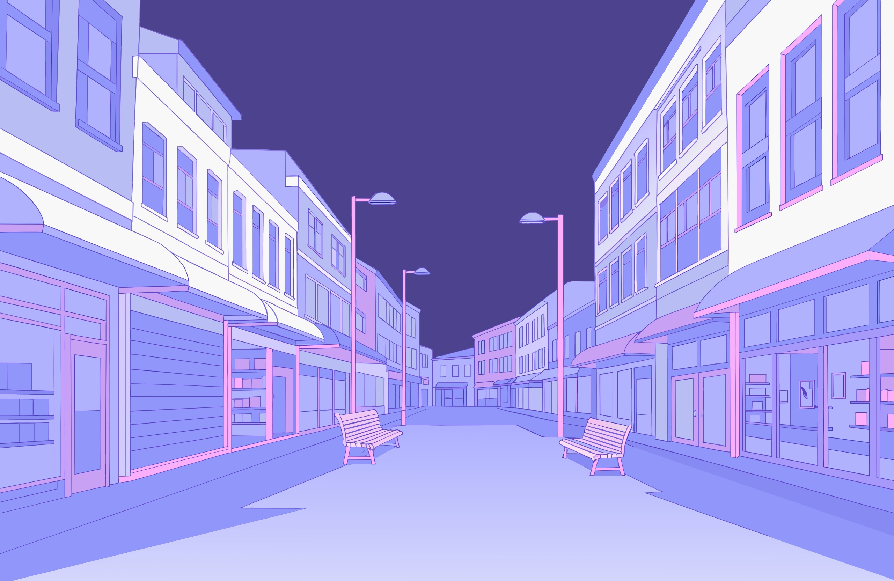

дольше, зато светло и много людей. так спокойнее
сынок, не подскажешь, как пройти к вокзалу? покажи на карте
сейчас, открою карту…
эй! руки от рюкзака!
следи за рюкзаком! жми на того, кто к нему тянется
Пока актёр, переодетый в бабушку, отвлекал,
его напарник лез в рюкзак
Лучше заранее
- выбирать освещённые улицы, где есть люди
- смотреть маршрут заранее, пока светло
- держать телефон заряженным
- в толпе носить рюкзак спереди
- скидывать близким, где ты
Если кажется, что за тобой идут, зайди в магазин или кафе и попроси помощи.


глава 3 (прогулка)
короткий путь в чужом городе
Навигатор строит самый быстрый маршрут, но не смотрит, светло ли там и есть ли люди. Тёмный переулок сэкономит пять минут, но если что-то случится, рядом никого не будет.
Если сомневаешься, иди длинной дорогой.
Но и в толпе есть свои риски. Карманники часто работают вдвоём, один отвлекает вопросом или просьбой, а второй в это время лезет в сумку.
фух, я хотя бы выжил!
ой, мне кто-то писал, надо проверить сообщение